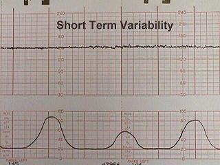
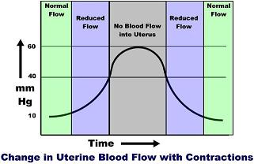
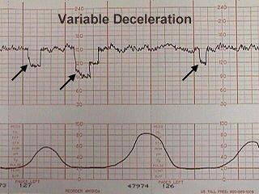
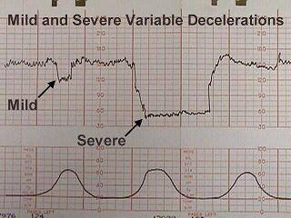
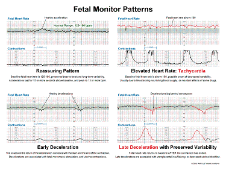
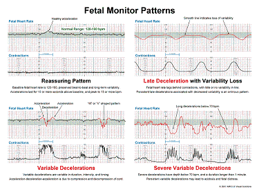

Bradycardia is the sustained depression of fetal heart rate baseline below 120
BPM (110 at full term).
Most of
these are caused by increased vagal tone, although congenital cardiac
abnormalities can also be responsible.
Mild
bradycardia (to 80 or 90 BPM) with retention of beat-to-beat variability is
common during the second stage of labor and not of great concern so long as
delivery occurs relatively soon.
Moderate
to severe bradycardia (below 80 BPM) with loss of beat-to-beat variability,
particularly in association with late decelerations, is more troubling and may
indicate fetal distress, requiring prompt resolution
The normal fetal heart rate baseline is from 120 to
160 BPM and has both short and long-term "variability."
Short term
variability means that from one moment to the next,
the fetal
heart speeds up slightly and then slows down slightly, usually with a range of
3-5 BPM from the baseline
.
Variability is normally controlled by the fetal brain through sympathetic and
parasympathetic influences. Reduced variability occurs normally during fetal
sleep and usually returns after 20 to 40 minutes.
Reduced
variability may also occur:
Following
narcotic administration
With fetal
anomalies or injury
With hypoxia and
acidosis in combination with such FHR abnormalities as late decelerations,
tachycardia, bradycardia, and severe variable decelerations.
Persistent
or progressively reduced variability is not, by itself, a sign of fetal
jeopardy. But in combination with other abnormalities may indicate fetal
intolerance of labor.
During a uterine contraction, blood flow through the uterus slows. If the
contraction is strong enough, all blood flow through it will stop.

This
decreased flow occurs because of the pressure gradients in the system.
Maternal
mean arterial pressure (MAP) is around 85 mm Hg.
The pressure on the
inside of the uterus (at rest) is around 10 mm Hg. The pressure within the
uterine muscle (intramyometrial pressure or IMP) is usually about 2-3 times that
of the intra-amniotic pressure. \
Because of these pressures, blood flows from the
high pressure uterine arteries, through the intramyometrial spiral arteries (and
past the medium pressure intramyometrial zone) and
into the low pressure intravillous space. From the IVS, blood is drained out through the even lower
pressure venous system and returned to the mother's circulation.
During a
contraction, the intramyometrial pressures rise with the increased muscle tone.
As the compressive pressure rises, blood flow through the spiral arteries
diminishes (less pressure gradient
to drive the blood through them), and then
stops when the IMP equals the MAP. The IMP usually equals the MAP when the
amniotic fluid pressure is around 40 mm Hg.
(Remember that the intramyometrial
pressure is 2-3 time that of the amniotic fluid pressure). As the contraction
eases up, blood flow through the spiral arteries resumes and by the end of the
contraction,
blood flow is back to normal.
Thus, with
each contraction of any significance, there is initially reduced blood flow to
the intervillous space, then a cessastion of blood flow, followed by a gradual
resumption of blood flow.
On one
level, you could imagine the danger of the fetal oxygen supply being interrupted
by each uterine contraction. On another level is the realization that for a
normal fetus,
this interruption is nearly trivial (similar to holding your
breath for 5 seconds). But if the contractions are coming too frequently (with
very little time between contractions for the fetus to resupply),
or if the
fetus already has a significant problem, then contractions can pose a threat.
During latent phase labor (prior to 4 cm), contractions may occur every 3-5
minutes and may or may not be painful.
A normal
contraction pattern in active labor shows contractions occurring about every 2-3
minutes and lasting about 60 seconds.
If contractions
are less often than every 2-3 minutes in the active phase, labor may
progress more slowly, if at all. While less frequent contractions are the
rule in latent phase labor (prior to 4 cm), they are the exception in active
labor.
Coupling means that two contractions occur one right after the other rather than
the normal pattern. Usually, coupling is followed by a longer contraction-free
interval.
Tripling can also be seen where three contraction occur without any
significant recovery time.
If labor
is progressing normally, coupling can be ignored. Often, however, coupling is
associated with dysfunctional progress in labor. In these cases, coupling can be
treated with:
If contractions are persistently more often than 5 contractions in 10 minutes,
this is called "tachysystole." Tachysystole poses a problem for the fetus
because it allows very little time for resupply of the fetus
with oxygen and
removal of waste products. For a normal fetus, tachysystole can usually be
tolerated for a while, but if it goes on long enough, the fetus can be expected
to become increasingly hypoxic and acidotic.
Tachysystole is most often caused by too much oxytocin stimulation. In these
cases, the simplest solution is to reduce or stop the oxytocin to achieve a more
normal and better tolerated labor pattern.
Other causes of tachysystole include:
Dehydration
Placental
abruption
Pre-eclampsia
Amnionitis
In cases
of spontaneous tachysystole, increasing maternal hydration and placement in the
lateral decubitus position may slow the contractions.
These heart rate changes are recurring throughout labor. They are typically
associated in some way with uterine contractions. There are three basic
recognized types:
Early
Decelerations
Late
Decelerations
Variable
Decelerations
Each has
its own features and clinical significance. In addition, a fetus may demonstrate
combined decelerations (for example,
a severe variable deceleration with a late
deceleration component.)
Early decelerations are periodic slowing of the fetal heartbeat, synchronized
exactly with the contractions. These dips are rarely more than 20 or 30 BPM
below the baseline.
These
innocent changes are thought to be due, in many cases, to fetal head compression
within the birth canal.
Sometimes,
patients demonstrating early decelerations will later develop variable
decelerations (see below).
Late
decelerations are repetitive, gradual slowings of the fetal heartbeat toward the
end of the contraction cycle. They are felt to represent some degree of
utero-placental insufficiency.
All blood
flow in and out of the IVS stops briefly during a contraction. A normal fetus
with normal reserve (oxygen in its bloodstream, in the blood of the placenta,
and in the intravillous space) will probably not notice the tiny drop in total
oxygen availability during these contractions.
But a fetus who has used up its
reserve, or cannot maintain its reserve will, over the course of the
contraction, develop some degree of hypoxia, hypercarbia and acidosis.
This
otherwise normal fetus will respond by slowing its heart rate, to conserve
energy. The fetal heart is the largest consumer of oxygen in the fetus and if
the rate can be slowed,
the fetus will survive longer on less oxygen. After the
contraction passes and fresh blood resupplies the intervillous space, the
hypoxia, hypercarbia and acidosis is eased and the fetal heart rate returns to
normal.
Clinically, the development of late decelerations is a worrisome sign that the
fetus has very little reserve. Techniques that may be used to correct this
problem include:
Changing maternal position to improve uterine blood flow
IV hydration to
increase maternal blood volume, presumably leading to increased uterine
blood flow
Administering
oxygen to the mother to try to get some additional oxygen through to the
fetus. Of the three standard treatments, oxygen administration is the least
useful, since the maternal hemoglobin oxygen saturation is likely already
99%. The effect of breathing additional oxygen will probably have minimal
effect on the oxygen saturation.
Decreasing or
discontinuing oxytocin infusion to slow down or stop contractions that are
provoking the decelerations.
Tocolytic drugs
to slow down or stop contractions that are provoking the decelerations.
If the late
decelerations are persistent and non-remediable, this is considered "fetal
distress," "fetal intolerance of labor," or a "non-reassuring fetal heart rate
pattern.
" Such patients should be delivered promptly to avoid fetal injury or
death. Sometimes cesarean section is required to achieve prompt delivery.
If
persistent and not correctable, they represent a threat to fetal well-being.
Variable decelerations are variable in onset, duration
and depth. They may occur with contractions or between contractions.
Typically,
they have an abrupt onset and rapid recovery (in contrast to other types of
decelerations which gradually slow and gradually recover.
Variable
decelerations are thought to represent a vagal response to some degree of
umbilical cord compression.
If the umbilical cord is only slightly compressed,
this will obstruct the umbilical vein (low pressure system) which returns
re-oxygenated blood to the fetal heart.
The initial normal fetal response to
this is a slight increase in fetal heart rate to compensate for the lack of
blood return and the slowly diminishing oxygen supplies.
If this slight increase
in FHR is followed by a major drop in FHR, this phenomenon is called a
"shoulder."
As
pressure on the umbilical cord increases, the high-pressure umbilical arteries
become occluded. When this happens, there is an immediate rise in fetal blood
pressure.
30% of the fetal cardiac output goes to the placenta and if that flow
is blocked, the fetus will rapidly develop significant hypertension.
The normal
fetus will respond to this hypertension by immediately slowing the heart down by
sending a signal through the vagus nerve. When the umbilical cord obstruction is
released,
the vagal response disappears and the fetal heart returns to normal
.
If a mild
degree of cord compression continues (enough to continue to obstruct the
umbilical veins for a while), then another "shoulder" may appear at the end of
the deceleration.
If the
variable deceleration lasts long enough to cause hypoxia, there may be a more
gradual rise back to the baseline and some "overshoot."
Overshoot means the
heart rate goes higher than the baseline for a while, to compensate for the mild
degree of hypoxia and acidosis that has occurred during that deceleration.
If
you exercise vigorously for a minute, your muscle tissues will acquire some
degree of oxygen debt and a mild degree of local acidosis. When you sit down and
rest,
your heart rate will be higher than before you started exercising, but
will return to normal as you resupply your muscles with oxygen and remove the
local waste products.
The fetus responds in a similar fashion.
Variable
decelerations, unlike late decelerations, are not caused by hypoxia, although if
severe enough, frequent enough and persistent enough, can ultimately lead to
some degree of fetal acidosis
.
The
interventions to effectively treat variable decelerations may include:
Changing maternal position to improve uterine blood flow
IV
hydration to increase maternal blood volume, presumably leading to increased
uterine blood flow
Administering oxygen to the mother to try to get some additional oxygen
through to the fetus. Of the three standard treatments, oxygen
administration is the least useful, since the maternal hemoglobin oxygen
saturation is likely already 99%. The effect of breathing additional oxygen
will probably have minimal effect on the oxygen saturation.
Amnioinfusion to improve oligohydramnios
Decreasing or discontinuing oxytocin infusion to slow down or stop
contractions that are provoking the decelerations.
Tocolytic drugs to slow down or stop contractions that are provoking the
decelerations.
Digital elevation of the fetal head out of the maternal pelvis to ease
pressure on the umbilical cord.
Occasional
mild or moderate variable decelerations are common and not considered
threatening. They are seen in the majority of laboring patients at some time or
other.
They are more common in the second stage of labor.
Mild
variable decelerations do not dip below 70 BPM and last less than 30 seconds.
Severe
variable decelerations dip below 60 BPM for at least 60 seconds ("60 x 60"). If
persistent and not correctable by simple means, they can be threatening to fetal
well-being.
Like persistent, non-remediable late decelerations, fetuses
demonstrating persistent, non-remediable severe variable decelerations should be
delivered promptly, preferably vaginally,
Prolonged decelerations last more than 60 seconds and occur in isolation.
Causes
include maternal supine hypotension, epidural anesthesia, paracervical block,
tetanic contractions, and umbilical cord prolapse.
Some of
these are largely self-correcting, such as the deceleration following
paracervical block, while others (maternal supine hypotension) respond to simple
measures such as repositioning.
Other
causes (such as umbilical cord prolapse) require prompt intervention to avoid or
reduce the risk of fetal injury.
A Systematic Approach to Reading Fetal Heart
Rate Recordings
1. Evaluate recordingóis
it continuous and adequate for
interpretation?
2. Identify type of
monitor usedóexternal versus internal,
first-generation versus
second-generation.
3. Identify baseline
fetal heart rate and presence of
variability, both long-term and
beat-to-beat (short-term).
4. Determine whether
accelerations or decelerations from the
baseline occur.
5. Identify pattern of
uterine contractions, including
regularity, rate, intensity, duration
and baseline tone between contractions.
6. Correlate
accelerations and decelerations with
uterine contractions and identify the
pattern.
7. Identify changes in
the FHR recording over time, if
possible.
8. Conclude whether the
FHR recording is reassuring,
nonreassuring or ominous.
9. Develop a plan, in
the context of the clinical scenario,
according to interpretation of the FHR.
10. Document in detail
interpretation of FHR, clinical
conclusion and plan of management.
Nonreassuring patterns
Fetal tachycardia
Fetal bradycardia
Saltatory
variability
Variable
decelerations associated with a
nonreassuring pattern
Late decelerations
with preserved beat-to-beat variability
Ominous patterns
Persistent late
decelerations with loss of beat-to-beat
variability
Nonreassuring
variable decelerations associated with
loss of beat-to-beat variability
Prolonged severe
bradycardia
Sinusoidal pattern
Confirmed loss of
beat-to-beat variability not associated
with fetal quiescence, medications or
severe prematurity
Emergency Interventions for Nonreassuring
Patterns
Call for assistance
Administer oxygen
through a tight-fitting face mask
Change maternal
position (lateral or knee-chest)
Administer fluid
bolus (lactated Ringer's solution)
Perform a vaginal
examination and fetal scalp stimulation
When possible,
determine and correct the cause of the
pattern
Consider tocolysis
(for uterine tetany or hyperstimulation)
Determine whether
operative intervention is warranted and,
if so, how urgently it is needed

Neonatal morbidity and mortality rates have not been
definitively shown to be reduced with the use of EFM over intermittent
auscultation. An increase in the rates of cesarean section has been
associated with EFM.
The use of EFM as compared with intermittent
auscultation has not been shown to reduce neonatal morbidity or
mortality rates but has been associated with increased rates of cesarean section
and maternal infection.
Conclusion
for women who have an uncomplicated pregnancy and who
are healthy,
monitoring should take place at regular intervals using intermittent
auscultation.
For women who are considered to have high-risk
pregnancies,